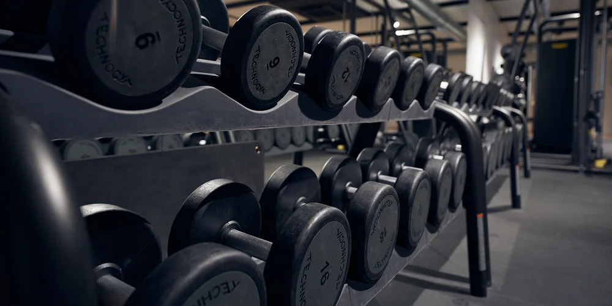
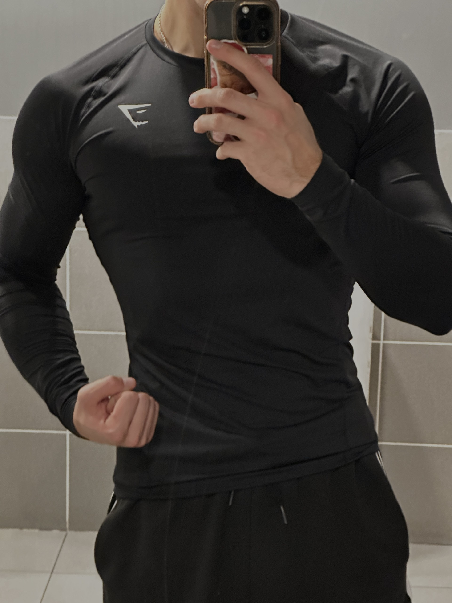

Sports
Sports & strength training
Swimming, gymnastics and strength training are an important part of my routine.
Sports
Sports & strength training
Sport has been part of my routine for several years. I practised swimming and gymnastics during my teenage years, and I started strength training in 2022.
These activities help me develop discipline, consistency and balance. They also allow me to stay active and set goals outside of my studies.
